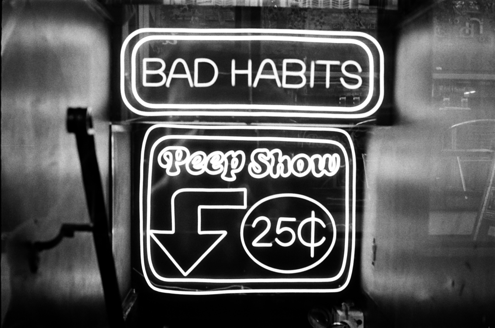
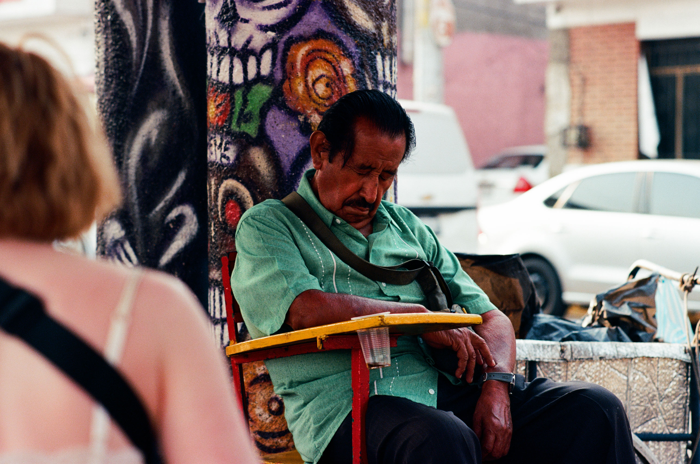
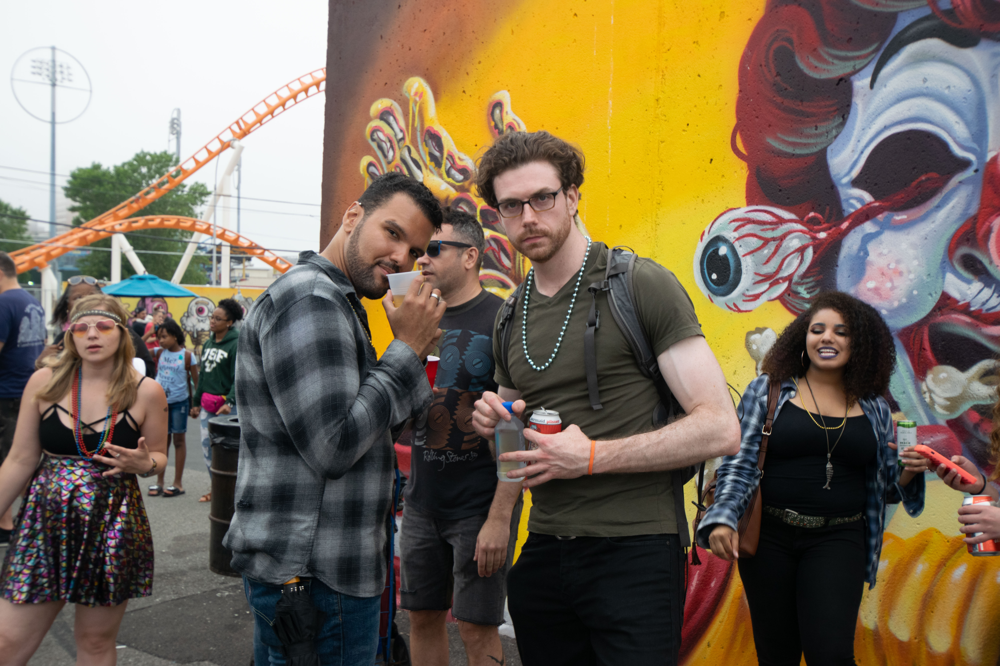
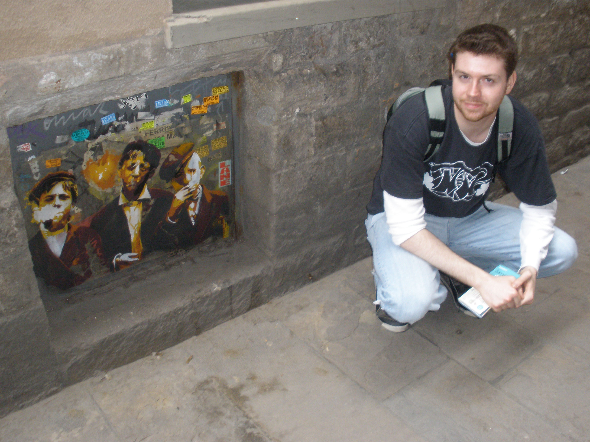

I shoot both digital and analog, color and black-and-white, capturing daily repetitions, light and shadow, reflections and dualities.
I also photograph architecture, abstractions, fine art, conceptual, and landscape work.
I write photo essays, city essays, and travel observations.
I write about philosophy, psychology, history, and architecture.
I write criticism and musings on the odd habits witnessed during wandering.
This website archives my life's photographic work and writing. I add new work regularly.